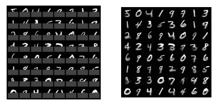

<!DOCTYPE html>
<html>
  <head>
    <script src="index.js"></script>
    <!-- Global site tag (gtag.js) - Google Analytics -->
    <script async src="https://www.googletagmanager.com/gtag/js?id=UA-130557482-1"></script>
    <script>
      window.dataLayer = window.dataLayer || [];
      function gtag(){dataLayer.push(arguments);}
      gtag('js', new Date());

      gtag('config', 'UA-130557482-1');
    </script>

    <link rel="stylesheet" href="style.css" />
    <meta name="viewport" content="width=device-width, initial-scale=1">
    <title>Jinansh Shah</title>
  </head>
  <body>
    <menu-bar></menu-bar>
    <script src="menuBar.js"></script>

    <div class= "center">
      <profile-card title="Robo-Advisor" company="" date="September 2020 - December 2020" description="Created an investment advisor using Python and Firebase – recommended portfolios back-tested over twelve 5-year periods yielded annual returns of at least 13% from 2005-2020. The flow of the program is as follows: the user signs-up/logs-in and is directed to their investment preferences page. Once the investment preferences are set, they are prompted to create a portfolio. To create a portfolio, various macro-economic factors are forecasted, and securities are eliminated based on investor preferences, and then, based on the user’s risk tolerance, various portfolio optimization techniques are back-tested over 15 five year periods. Then, the most optimal portfolio is recommended for the user." code= "| <a href='https://utoronto-my.sharepoint.com/:p:/g/personal/maddie_shiell_mail_utoronto_ca/EVj7ulkHYfRMie9q2tdsWIgBDfVz9w3tPXRgmv45OwadiA?e=jXgarE'>View the presentation</a> |"></profile-card>

      <profile-card title="Equity Portfolios - Model Comparisons II" company="" date="April 2019" description="The purpose of this project was to study Conditional Value-at-Risk (CVaR) optimization and Robust CVaR with scenario-based optimization using Monte-Carlo simulations. Two simulations were be used: Gaussian Monte-Carlo and Non-normal Monte-Carlo with higher moments. The simulations were used to create factor scenarios for each of the Fama-French factor returns. The Fama-French model was then used to create 5000 asset scenarios which were used to create portfolios which minimize losses using Conditional Value-at-Risk (CVaR) with a confidence level of 95%. A Robust CVaR portfolio was also created with a robustness level of 90%. It was observed that the portfolios had very similar volatility expectations and realizations, but those created using the Non-normal Monte-Carlo simulations had higher returns (11.6% annually) and better Sharpe ratios. Accuracy of results can be improved with the inclusion of more assets, observation of the assets for a longer time period, more simulations and inclusion of investor perspectives in the formulation of the problem." code= "| <a href='https://github.com/jshah98/MIE377P2'>Github</a> | <a href='docs/ReportProject2.pdf'>Final Report</a> |"></profile-card>

      <profile-card title="Image Completion Model" company="" date="March 2019" description="Used an expectation - maximization algorithm to create a program in Python that uses a partial image to guess what the full image would look like." code= " <p></p> | <a href='https://github.com/jshah98/ImageCompletion'>Github</a> |"></profile-card>

      <profile-card title="Equity Portfolios - Model Comparisons I" company="" date="March 2019" description="Compared portfolios built with CAPM, Fama-French and PCA factor models, and Mean Variance Optimization (MVO) and Cardinality-constrained MVO investment strategies. In total, six portfolios were compared. The PCA factor models performed the best, followed by the French-Fama factor models with the highest annual returns being 12.7%. Additionally, investment strategies using MVO with cardinality constraints have a slightly higher portfolio return than their MVO counterparts that do not have cardinality constraints." code= "| <a href='https://github.com/jshah98/MIE377-Project-1'>Github</a> | <a href='docs/MIE377Project1.pdf'>Final Report</a> |"></profile-card>

      <profile-card title="Fake News Identifier" company="" date="January 2019" description="Used scikit-learn to create a decision tree classifier to classify real vs. fake news headlines. The model was trained using 70% of the data, validated using 15% of the data, and tested using 15% of the data. The classifier performed with an accuracy of 77%." code= "| <a href='https://github.com/jshah98/FakeNewsIdentifier'>Github</a> |"></profile-card>

      <profile-card title="Autonomous Pill Packing Robot" company="" date="January 2018 - April 2018" description="Built an autonomous robot to pack a cabinet with pills representing the daily diet of various laboratory rats. These pills will be placed by the robot into their designated drawers based on a user inputted diet allocation and aligning with the parameters outlined in the RFP." code= "| <a href='docs/RFP3.pdf'>RFP</a> | <a href='https://drive.google.com/file/d/1W95H3Wi3e_IsVpfEz3v6rlHyFYNZjIq3/view?usp=sharing'>Final Report</a> |
        "></profile-card>

      <profile-card title="EEG Headset to Detect Infant Epilepsy " company="" date="February 2017 - April 2017" description="Worked with Dr. Miguel Cortez and Dr. Jason Boulet at the Department of Neurology at the Hospital for Sick Children (SickKids) to develop the housing for the device used to diagnose infantile epilepsy." code= "| <a href='docs/AlphaOnePagerv6.pdf'>One Pager</a> | <a href='https://drive.google.com/file/d/0Bwfwe1CVyChVZzRkNEJYcER5bGs/view?usp=sharing'>Prototype Testing</a> |
        "></profile-card>

      <profile-card title="Inventory Management for Small Businesses" company="" date="January 2017 - February 2017" description="This opportunity involves improving the inventory management and preparation for Creatron, an electronics component supplier based in Toronto. The system, when analyzed, was deemed inadequate due to its incapability to address sudden high demand, such as those caused by events that require bulk purchases of product such as hackathons and major school projects." code= "| <a href='docs/Request_for_Proposal-2.pdf'>RFP</a> | <a href='docs/W16 Design Brief.pdf'>Design Brief</a> |
        "></profile-card>

      <profile-card title="Synonyms" company="" date="November 2016" description="Created a program in Python that approximates the semantic similarity between any two words by parsing data from large novels and computing cosine similarities and Euclidean spaces between vector descriptors of each word." code= "| <a href='https://github.com/jshah98/Synonyms'>Github</a> |"></profile-card>

      <!-- <h2>Coding Projects</h2>
      <profile-card title="Decent Optics" company="" date="January 2014 - May 2014" description="Created a downloadable Java game (~2500 lines) to teach high school level ophthalmology to players." code= "| <a href='https://github.com/jshah98/Decent-Optics101'>Github</a> | <a href='docs/doc/package-summary.html'>Documentation</a> |"></profile-card>

      <profile-card title="Battleship" company="" date="January 2014" description="Created a single player and multiplayer Battleship game using Java (~1000 lines). " code= "| <a href='https://github.com/jshah98/Battleship'>Github</a> | "></profile-card>

      <profile-card title="Connect 4" company="" date="April 2013" description="Created a multiplayer Connect 4 game using Turing  (~500 lines)." code= "| <a href='https://github.com/jshah98/Connect-4'>Github</a> | "></profile-card> -->


      <!-- <h2>Technical Projects</h2> -->
      <!-- <profile-card title="Co-founder" company="Goldelocks" date="April 2017-October 2018" description="• Created a POS platform for restaurants through which guests can filter, reserve, order, and pay menu items by leading the development of a website & Android/iOS application in a team of 7. • Validated the platform by testing it with various dine-in & takeout restaurants in the GTA – received a government grant to pursue this opportunity."></profile-card> -->
      <script src="profileCard.js"></script>
    </div>

    <footer-bar></footer-bar>
    <script src="footerBar.js"></script>
  </body>
</html>
